YJ MGC 3 Elite
{kind=link}
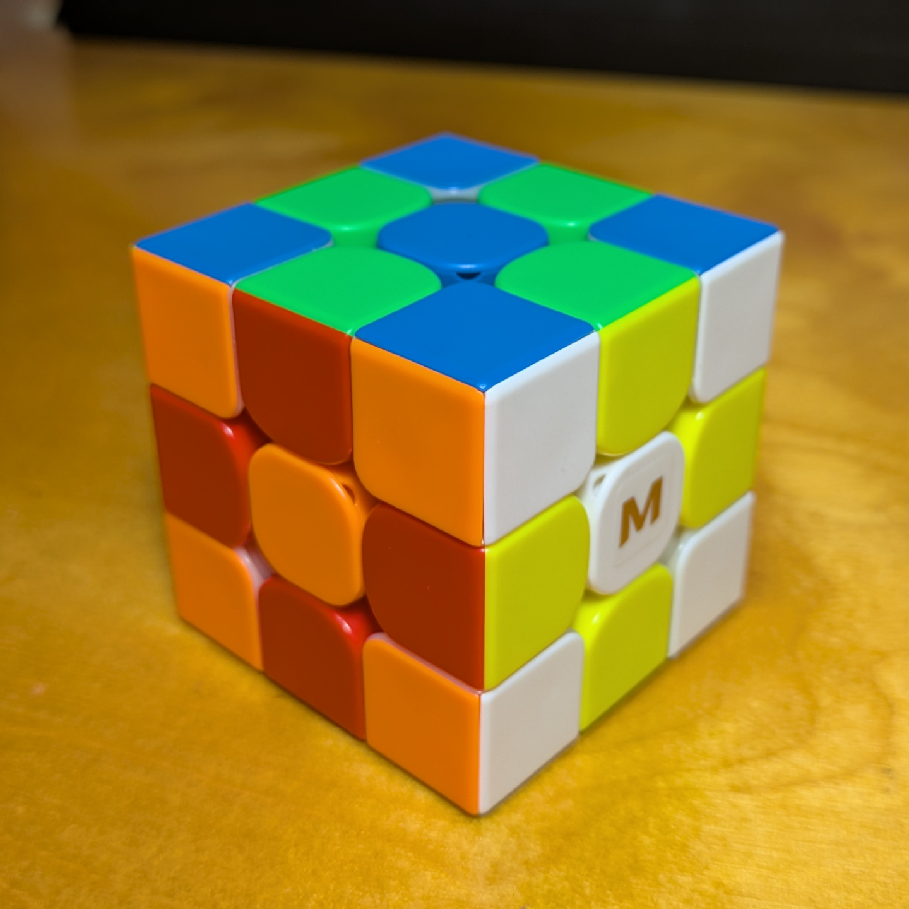
YJ8120 (2019)
YJ MGC3 Elite.
Recently I decided to look into the "uneven reputation" that the YJ MGC 3×3 line got. It's not too late; most of them are still available (except for the MGC "Repulsion"...) So for Black Friday I got the Elite and the EST.
The Elite was released after the v2. The packaging signalled a premium purchase for cubes of that time. The included screwdriver had a screw-on cap with a hex socket.
I initially disliked the cube. It felt sluggish and struggled through turns. It also felt scratchy, or "papery", on the inside. I tried to adjust the edge magnet strength, and I realized that the included screwdriver was too small to turn the mechanism. I used another driver to switch the arrows downward (to reduce the magnet strength). But that made it worse, so I shortly turned it back.
But after messing with it, it started to come alive, and began responding better to my turns. This cube must have been sitting in storage for a while, and it took time for it to loosen up. And I finally got that tell-tale "clickety-clack" feeling I associated with the MGCs. This is the most dramatic break-in I think I ever felt in a new cube.
The cube has a matte surface and the logo is a shiny gold, covered by some tape. After hearing about how other cubers saw the logo rub off fairly quickly, I decided not to peel it. (They provided a few extra logo stickers in the accessories box.)
The adjustment system is pretty extensive: two magnet strengths, screw axis distance, and a six-position hand-tunable compression dial like on the GTS 3, but this dial can be turned both ways. I strongly suspect that the Elite will also respond well to lube; a total pro cube.
In my hands, and especially against the Beta, this is definitely a cube of its time, like the QiYi M Pro in feeling. However, I found that most reviewers at the time liked the extent of the pro-level customization available against the cube's reasonable price. I am glad to have acquired this one, but for an only cube, it'd still be the Beta for me, as a #cubezoomer.
Original post: https://www.instagram.com/p/DSCmxDukoVi
Specifications
| Make | YJ |
|---|---|
| Model | MGC 3 Elite |
| Edition/Variant | |
| Model no. | YJ8120 |
| Release year | 2019 |
| Magnets (edge-corner) | 🧲 |
|---|---|
| Magnets (core) | ❌ |
| Magnets (maglev) | ❌ |
| Stickerless | ⭕ |
| Internals | Split-piece design |
|---|---|
| Externals | Frosted plastic surfaces |
| Adjustment | Dual (Philips screw - axis distance; hand-operated dial - spring compression); edge magnet strength (2 levels) |
| Remarks | (none) |
Photos
{kind=link}
{kind=link}
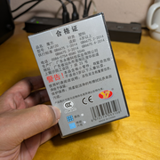
Box bottom (with model number)
{kind=link}
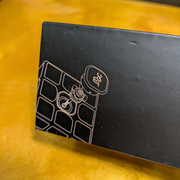
Cube lineart illustration on the box
{kind=link}
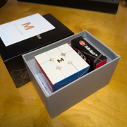
Contents in a compartmentalized box
{kind=link}
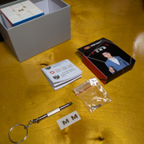
Accessory box contents
{kind=link}
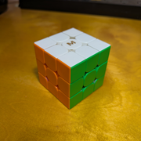
Cube (solved state)
{kind=link}
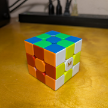
Cube (checkerboard state)
{kind=link}
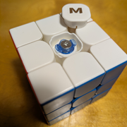
Center cap off, detail of hand-adjustable dial
{kind=link}
{kind=link}
{kind=link}
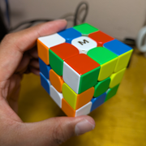
Cube (scrambled state)
{kind=link}
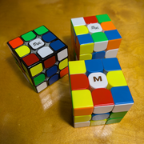
With the MGC v1 and 2
{kind=link}
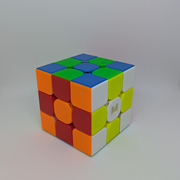
Cube (checkerboard, lightbox)
Collections
This cube is part of the following collections: